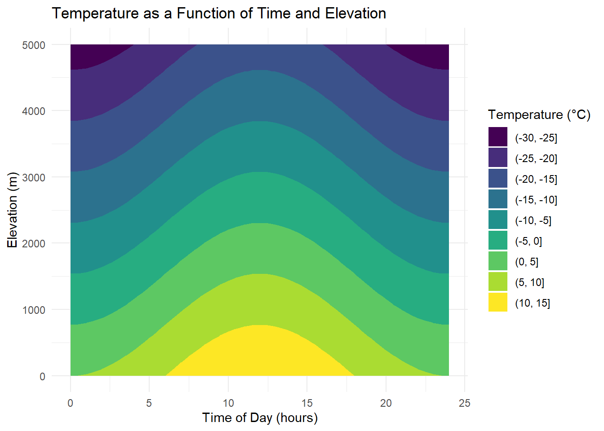
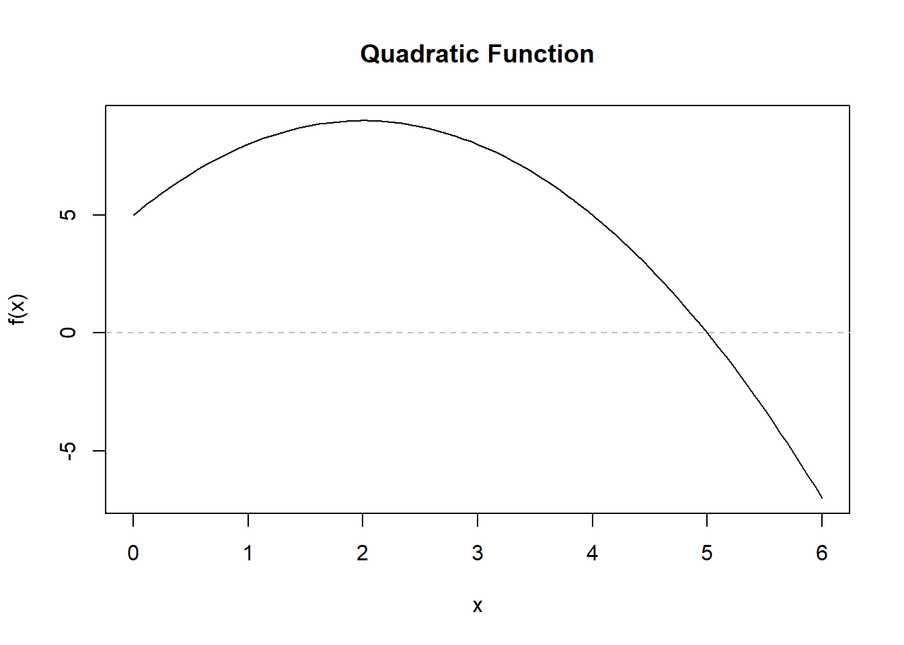
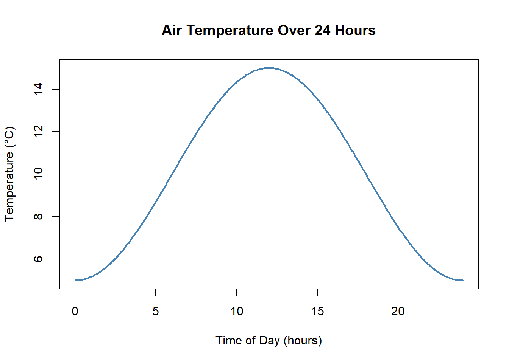

Chapter 2 Pre-Calculus Foundations
2.1 Learning Objectives
By the end of this chapter, you will be able to:
- Interpret and compare functions from graphs, tables, and formulas.
- Track units through computations and check results for reasonableness.
- Build and evaluate a simple model for an environmental variable as a function of time and elevation.
It may have been a while since you last used some of your pre-calculus knowledge. Don’t worry if certain topics feel unfamiliar—we’ll walk through each concept with context and practice.
This chapter is designed to help you review and refresh the foundational math skills that will support your success in this course. Think of it as a toolbox: later chapters will point to specific tools you’ll need to solve real problems, and those are the ideal moments to revisit them. Concepts stick best when learned in context—so come back to this chapter anytime you need a quick refresher.
2.2 What You’re Expected to Know
To get the most out of this course, you should feel reasonably comfortable with:
- Working with functions and interpreting graphs
- Manipulating algebraic equations
- Rules for exponents and logarithms
- Understanding and converting units
- Reading and setting up word problems
If these topics feel rusty, that’s perfectly normal. This chapter is here to get you back up to speed—and to remind you that you already have more tools than you might think.
2.3 How to Approach Calculus Problems
Understanding calculus isn’t about memorizing steps—it’s about learning to think mathematically so you can interpret real-world change. It’s normal for parts of this to feel unfamiliar at first; progress comes from trying, checking, and revising. In this course, we’ll model environmental systems—temperature, rainfall, population dynamics—and the goal is clarity, not perfection on the first attempt.
When you get stuck, start small: sketch the situation, label axes and units, compute one example value, and say out loud what a slope or an area means in context. Treat mistakes as information, not judgment—they show you what to try next. Keep going; you’re building tools you’ll use well beyond this class.
Here’s a strategy to help you become a more confident problem solver:
2.3.1 Clarify the Ask
- What is being asked?
- Is the question about a rate of change, a maximum/minimum, or an accumulated quantity?
- What type of function or scenario is involved (linear, quadratic, exponential, etc.)?
Always start by identifying what quantities are changing and how they’re related.
2.3.2 List the Givens
- Write down the given information clearly.
- Label all variables, units, and known values.
- If a graph or context is given, sketch or summarize what you see.
Clarity in setup is half the solution.
2.3.3 Translate the Math
Equations are not just symbols—they are instructions:
- Each term contributes to the behavior of the function.
- Operators (+, −, ×, ÷, …) tell you what actions to take.
- Derivatives tell you how the function is changing.
Don’t rush through the algebra. Pause and ask: “What is this term telling me?”
2.3.4 Work Step by Step
Instead of aiming straight for the final answer, focus on the process:
- Write out what you’re doing and why.
- If you take a derivative, explain what it represents (e.g., “This is the rate of change of population over time.”)
- Label your steps so they can be traced logically.
When taking notes, don’t just copy answers. Write procedures and reasoning—this builds transferable understanding.
2.3.5 Reflect and Interpret
- Does your answer make sense in context?
- Are the units correct?
- Is the magnitude reasonable?
- What does your result say about the system you’re studying?
In environmental science, the interpretation is as important as the calculation.
2.3.6 Growth Mindset
You may not see math in every class you take—that’s okay. Our goal here is to build confidence and numerical literacy.
Solving math problems is a step-by-step process. Thinking too far ahead can cause confusion. Take it one step at a time—that’s how you make progress.
Also, try not to overthink mid-solution. If you tried to narrate every muscle movement while climbing stairs, you might trip. Trust yourself. Don’t second-guess every step—work through to the end. When you reflect, you’ll catch errors and sharpen your thinking.
Confidence grows by doing. Keep moving forward—even imperfect progress builds understanding.
Athletes know this: when you overanalyze your swing while swinging, performance often gets worse. Much of skilled work is partly automatic. Bringing every detail into the conscious mind can interrupt your flow.
Trust your instincts. Don’t be afraid to commit to your approach. Swing through—you’ll learn more by finishing a solution than by freezing in doubt.
2.4 How We Communicate Relationships
By thinking of functions as input-output machines and visualizing them on a graph, you’ll be better equipped to interpret and model relationships in environmental systems and beyond.

A function represents a relationship between two quantities: an input and an output. The way we represent and communicate this is through:
- Verbal descriptions
- Graphical representations like charts
- Tables of data
- Formulas that capture the relationship
2.5 Understanding What \(f(x)\) Means
You’ve probably seen the equation of a line written like this:
\[ y = mx + b \]
This is the same as writing:
\[ f(x) = mx + b \]
Both notations describe the same relationship. Here’s what they mean:
- \(x\) is the input (what you plug into the function).
- \(f(x)\) or \(y\) is the output (what comes out after applying the function rule).
Graphically:
- The input is usually plotted along the x-axis.
- The output (\(y\) or \(f(x)\)) is plotted along the y-axis.
So when you see a point like \((4, 11)\), it means:
- Input \(x = 4\) produces output \(f(x) = 11\).
A function is like a black box: you put something in, a rule is applied, and you get something out.
For example:
\[ f(x) = 2x + 3 \]
If we input \(x = 4\):
\[ f(4) = 2 \cdot 4 + 3 = 11 \]
So the point \((4, 11)\) would appear on the graph.
- Input: \(x = 4\)
- Rule: multiply by 2, then add 3
- Output: \(f(4) = 11\)
If into the same function we input 🐶 then we end up \[ f(🐶) = 2🐶+3 \]
everywhere there was an x, we replaced it with the new input 🐶.
2.5.1 Functions Don’t Have to Be Named \(f\)
Functions can be named in ways that make their meaning clearer. For example:
- \(T(t)\) for temperature as a function of time
- \(P(n)\) for population as a function of years
The variable also doesn’t always have to be \(x\). Choosing names that match the context makes your math easier to read, easier to explain, and easier to connect to the real world.
2.5.1.1 Why Meaningful Function Names Matter
Suppose we want to model how land temperature T (in °C) changes with distance d (in km) from the shore. We could write the function in a very generic way:
\[ f(x) = 0.2x + 3 \]
Here, f is the temperature and x is the distance. This works mathematically, but it doesn’t tell us much about what the variables mean.
A clearer way is to use variables that match the context:
\[ T(d) = 0.2d + 3 \]
Now the function communicates something immediately:
- \(T(d)\) = land temperature (°C)
- \(d\) = distance from the coast (km)
This version is not only valid but more meaningful:
“Temperature increases by 0.2°C for every kilometer inland, starting from 3°C at the coast.”
By naming functions and variables in ways that reflect the system being studied, we make the math easier to interpret, easier to explain, and easier to apply.
2.5.2 Functions Can Have More Than One Input \(\, f(x,y)\)
Many environmental processes depend on more than one variable. For example, the distribution of a terrestrial species might be best described as a function of \(x\) and \(y\), where \(x\) is longitude and \(y\) is latitude.
Thinking further: what would the function look like for the location of a species in three dimensions, such as mapping their position in a water column? How would you write this mathematically?
In reality, many environmental systems depend on far more than three variables. When building models, the art is in simplifying: choosing the key variables that matter most for the question at hand. Including every possible factor would be too complex to work with, so we focus on what’s essential.
Discussion Prompt
In a group discuss the factors that control the growth of a tree. Write a pseudo-equation that takes the form of \[ \text{Growth} = f(\text{Variable 1}, \text{Variable 2}, \ldots) \] How many variables drive the growth of a tree?
Activity: Modeling Temperature as a Function of Time and Elevation
Learning Goals
- Understand how to construct and interpret a function of two variables.
- Apply environmental context to multivariable functions.
- Visualize how elevation impacts the daily temperature cycle using lapse rate.
At sea level, the temperature throughout the day is modeled by:
- \(T(t) = 10 - 5 \cdot \cos\left(\frac{\pi t}{12}\right) [°C]\)
Temperature decreases with elevation, at a lapse rate of 6.5°C per 1000 meters:
- \(L= \frac{6.5}{1000} = 0.0065 [\frac{°C}{m}]\)
The temperature as a function of elevation alone (assuming sea level temperature is 10°C):
- \(T(h) = 10 - 0.0065 \cdot h\)
So the temperature as a function of both time t and elevation h is:
- \(T(t, h) = 10 - 5 \cdot \cos\left(\frac{\pi t}{12}\right) - 0.0065 \cdot h\)
| Time (hours) | Elevation (m) | Temperature (degC) |
|---|---|---|
| 6 | 0 | 10.00 |
| 6 | 500 | 6.75 |
| 6 | 1500 | 0.25 |
| 12 | 0 | 15.00 |
| 12 | 1000 | 8.50 |
| 18 | 2000 | -3.00 |
| 18 | 5000 | -22.50 |
Reflection:
- At what time of day is the temperature difference between sea level and 2000 m greatest?
- What happens to the daily temperature range as elevation increases?
- Does the timing of the warmest part of the day change with elevation?
- Stare at this equation T(t, h) = 10 - 5 * cos(pi * t / 12) - 0.0065 * h, can you visualize the impact of t? what about h?
- The equation could have been written as f(x, y) = 10 - 5 * cos(pi * x / 12) - 0.0065 * y, would this be harder to interpret?

Figure 2.1: Temperature as a function of time of day and elevation.
Figure 2.2: Temperature over time at multiple elevations.
2.6 Graphing and Interpreting Change
Understanding the shape of a graph is crucial for interpreting real-world phenomena. Here are key features to notice:
- Increasing/Decreasing: Is the function going up or down as \(x\) increases?
- Peaks and Valleys: Where are the local maxima and minima?
- Concavity: Does the curve bend upward (concave up) or downward (concave down)?
Let’s look at an example of a quadratic function, which is commonly used to model situations with a single peak or valley. This function is an increasing function for \(x<2\) and decreasing for \(x>2\). It has a maximum at \(x=2\). We can also notice that the concavity of the function is concave down.
We can also look at how the function is changing as we move along the x-axis. At \(x=0\) the slope of the function is positive and steep. As we approach the maximum, the slope of the function is still positive, but it’s not increasing as fast. We could say it’s increasing at a decreasing rate. At the peak, the function is no longer changing. Now as we pass \(x=2\) the function is decreasing slowly at first, but faster and faster as \(x\) gets further away from the peak.
You can think of this as a ball in your hand. You throw it up, initially its moving fast, but as gravity acts on the ball it slows. Then for an instance, the ball hangs in the air - this is where it reaches its peak. Then the ball starts to fall, slowly at first, but it then begins to fall faster and faster.

Figure 2.3: Quadratic function showing a maximum.
The calculus you will learn in this course will give you the tools needed to quantify these observations. Identify the rates of change at different points and find the maxima and minima.
2.7 Key Function Types
Here are five common functions you’ll encounter:
| Function Type | Form | Environmental Example |
|---|---|---|
| Linear | \(y = mx + b\) | Streamflow increasing over time |
| Quadratic | \(y = ax^2 + bx + c\) | Pollution dispersal from a point source |
| Exponential | \(y = a \cdot b^x\) | Invasive species growth |
| Logarithmic | \(y = \log(x)\) | pH or sound intensity |
Mini Exercise Match the following environmental situations with function types:
1. Forest biomass grows rapidly, then levels off.
2. A spill’s impact decreases as you move downstream.
3. A steady rise in sea level over time.
Discussion Prompt What environmental processes could you model with these functions. See if you can identify some additional real-world examples for each graph.
Sketch the rough shapes of these functions and identify some of their key features?
Concept Check: Matching Functions to Systems
Match each environmental scenario with the most appropriate function type: linear, quadratic, exponential, or logarithmic.
1. An invasive insect population doubles every 3 weeks.
Click to reveal answer
Exponential. Doubling at regular intervals is the signature of exponential growth: \(P(t) = P_0 \cdot 2^{t/3}\).
2. Noise intensity perceived by an animal decreases as it moves away from a highway, but the relationship is not linear — the biggest drop happens in the first few meters.
Click to reveal answer
Logarithmic. Sound intensity in decibels follows a logarithmic scale. The rapid initial drop that levels off is characteristic of \(y = \log(x)\) (reflected and shifted).
3. The temperature in a forest drops at a steady rate of 0.5°C per 100 meters of elevation gained.
Click to reveal answer
Linear. A constant rate of change (0.5°C per 100 m) produces a straight line: \(T(h) = T_0 - 0.005h\).
4. A pollutant disperses from a point source. Concentration peaks at the source and decreases in both directions.
Click to reveal answer
Quadratic (or more precisely, a Gaussian/bell curve — but a downward-opening quadratic is a reasonable first approximation). The key feature is the single peak with symmetric decline.
2.8 Units, Rates, and Word Problems
Units are a scientist’s best friend. They don’t just tell us what we’re measuring—they also help us check if our answers make sense. In calculus, units play a central role because they give meaning to rates of change (derivatives) and accumulations (integrals).
Here are some common examples in environmental science:
- Atmospheric CO₂ concentration is measured in ppm (parts per million).
- Rainfall might be reported in mm/hour.
- Streamflow can be given in m³/s (cubic meters per second).
- Tree growth might be in cm/year.
2.8.1 Why Units Matter
Think of units as guardrails for problem solving:
- They help you avoid mistakes (e.g., mixing meters with kilometers).
- They give physical meaning to abstract symbols.
- They allow you to compare across systems and scales.
If your answer has the wrong units, it’s almost certainly the wrong answer.
2.8.1.1 A Famous Example: The Mars Orbiter Mishap 🚀
In 1999, NASA lost the Mars Climate Orbiter, a spacecraft that cost $390 million to design, build, and launch—all because of a simple unit conversion error.
- One engineering team used English units (pound-seconds of force).
- Another team assumed metric units (Newton-seconds).
- The mismatch went unnoticed, and the spacecraft’s trajectory was off course.
The result: the orbiter entered Mars’ atmosphere at the wrong altitude and was destroyed.
This dramatic example shows why scientists and engineers obsess over units. While our classroom mistakes won’t crash a $390 million spacecraft, they can still derail your reasoning. Keeping track of units is one of the simplest—and most powerful—ways to check your work.
Activity: Average Rate of Change
Suppose atmospheric CO₂ increases from 400 ppm to 420 ppm over 5 years.
Calculate the average rate of change
Now repeat the process but this time no numbers, run the same calculation with just the units. What do you end up with?
Now tell me the story of what your calculation means?
Reflection Questions
- What if we reported the time in months instead of years? How would the rate change?
- What if the increase had been 400 → 420 ppm in 10 years — what happens to the rate?
- Does “average rate” mean CO₂ increased by exactly 4 ppm every year? Why or why not?
2.8.2 Key Idea
A rate of change always involves comparing how much one quantity changes relative to another.
\[ \text{Rate} = \frac{\text{Change in Output}}{\text{Change in Input}} \]
- If the input is time, the rate tells us “how fast” something changes.
- If the input is distance, the rate might describe a gradient (e.g., temperature lapse rate with elevation).
- If the input is volume, the rate might describe a concentration per unit volume.
Units don’t just check your work—they tell the story of what the math means.
Concept Check: Units of Rates
For each rate below, state the units:
1. CO₂ concentration rises from 410 ppm to 420 ppm over 5 years. What are the units of the average rate of change?
Click to reveal answer
\[\frac{\Delta \text{CO}_2}{\Delta t} = \frac{10 \text{ ppm}}{5 \text{ years}} = 2 \text{ ppm/year}\]
The units are ppm per year.
2. A stream drops 150 meters over a horizontal distance of 30 km. What are the units of the stream gradient?
Click to reveal answer
\[\frac{150 \text{ m}}{30 \text{ km}} = 5 \text{ m/km}\]
The units are meters per kilometer (or equivalently, 0.005 m/m — a dimensionless ratio).
3. If you’re told a tree grows “3 rings per centimeter,” is that a rate? What are its units?
Click to reveal answer
Yes, it’s a rate — specifically the number of growth rings per unit of radial distance. The units are rings/cm. The inverse, cm/ring, would tell you the average ring width (how much the tree grew per year).
2.9 Getting Comfortable with Word Problems
Environmental word problems are at the heart of applying calculus. They take a real-world situation and ask you to identify the quantities involved, describe how they are changing, and build a model that captures those changes.
When you read a word problem, pause and ask yourself:
- What is changing? (What’s the variable of interest?)
- How fast is it changing? (Are we talking about a rate or an accumulated total?)
- What influences that change? (Is it driven by time, distance, elevation, or something else?)
2.9.1 Why Word Problems Matter
Anyone can compute a derivative or an integral once the equation is written down. The real challenge—and the real skill—is translating words into math. That’s what lets you use calculus to model glaciers, forests, rivers, or populations.
Remember: there is no single “right” way to start. Sketching, making a table, or writing down what you know in words are all valid first steps.
2.9.2 Example Problem
A glacier is melting at a rate that increases each year. What mathematical tools would help you model this?
Step 1. What’s changing?
- The glacier’s thickness or volume is decreasing.
Step 2. How is it changing?
- The rate of melt is itself increasing over time. That means the rate is not constant.
Step 3. What tools do we need?
- A derivative describes the melt rate at a given moment.
- An integral (this is a preview of 292) could estimate the total ice lost over a span of years.
- Because the rate is changing, an exponential or quadratic function might be a better fit than a linear one.
Activity: Rate of change around us
- What other environmental situations involve a rate that changes over time (not just a constant rate)? Discuss and share back with the class
- How would you represent this glacier problem with a graph? With a table?
- If you only had measurements of ice thickness each year, how would you estimate the rate of change?
2.9.3 Key Idea
Word problems are really about translation. You’re moving between:
- Verbal description → “the glacier is melting faster each year”
- Mathematical model → equations that capture this trend
- Interpretation → what the math tells us about the glacier and its future
The math is the language, but the story is always about the system you’re studying.
2.10 Practice: Interpreting Functions
2.10.1 What Are You Practicing?
In this section, you’ll get more comfortable reading, interpreting, and evaluating functions — especially those that model environmental systems.
You’ll see functions written in different forms (formulas, graphs, tables), and you’ll practice thinking about what the input and output represent.
This is an important foundation for calculus. When we interpret derivatives later on, we’ll always come back to what is this function telling us about the real world?
2.10.2 How to Approach These Problems
For any function, try answering these three questions:
What are the input(s) and output?
What does the function take in, and what does it give back?What do the variables represent?
For example, is \(t\) time? Is \(T(t)\) a temperature? What are the units?What does the formula tell you about the relationship?
If the function is increasing or decreasing, by how much?
Are there any constants or slopes that describe rates?
2.10.3 Practice Problems
Try these on your own or with a partner. Don’t just plug in numbers — ask what the function is saying!
🟢 Level 1: Getting Comfortable
1. Let \(f(x) = 3x + 2\).
a. What is the input and what is the output?
b. What does the function do to each input?
Click to reveal solution
a.
- The input is \(x\).
- The output is \(f(x)\), the value produced by the function rule.
b.
For each input \(x\), the function:
- multiplies \(x\) by 3
- then adds 2
So the function scales each input and shifts it upward.
2. Let \(T(t) = 20 + 0.5t\), where \(T(t)\) is temperature in °C and \(t\) is time in hours since sunrise.
a. What is the temperature at sunrise?
b. What is the temperature 4 hours after sunrise?
c. What does the 0.5 mean in this context?
Click to reveal solution
a.
Sunrise corresponds to \(t = 0\):
\[
T(0) = 20 + 0.5(0) = 20^\circ\text{C}
\]
b.
Four hours after sunrise:
\[
T(4) = 20 + 0.5(4) = 22^\circ\text{C}
\]
c.
The 0.5 represents the rate of change: the temperature increases by 0.5°C per hour.
3. The function \(P(n) = 100 \cdot (1.05)^n\) models the population of a fish species over time, where \(n\) is years.
a. What does the 100 represent?
b. Is this population growing or shrinking?
c. Calculate the population in 3 years.
Click to reveal solution
a.
The 100 is the initial population at \(n = 0\).
b.
Since \(1.05 > 1\), the population is growing.
c.
\[
P(3) = 100(1.05)^3 \approx 115.76
\]
So the population is about 116 fish after 3 years.
🟡 Level 2: Adding Complexity
4. You’re given \(C(d) = 50 + 10d\), where \(C\) is the cost in dollars of transporting material and \(d\) is the distance in kilometers.
a. What is the cost of transport if the distance is 0 km?
b. What is the marginal cost per kilometer?
c. What kind of functional relationship is this?
Click to reveal solution
a.
\[
C(0) = 50
\]
This is the fixed cost.
b.
The marginal cost is $10 per kilometer.
c.
This is a linear relationship.
5. Let \(H(t) = 0.3t^2 - 1.2t + 2\), where \(H(t)\) models the height (in meters) of a plant \(t\) weeks after planting.
a. What kind of function is this?
b. What might the graph of this function look like?
c. What does it suggest about the plant’s growth?
d. If you were to plug in a (very) large value for \(t\), what happens? Does the result make sense? How could you restrict this function?
Click to reveal solution
a.
This is a quadratic function.
b.
The graph is a parabola opening upward.
c.
The model suggests growth that slows at first and then accelerates over time.
d.
For very large \(t\), the height increases without bound, which is not realistic.
The function should be restricted to a reasonable time interval.
6. A temperature function is defined as:
\[
T(h) = 15 - 0.0065h
\]
where \(h\) is elevation in meters above sea level.
a. What is the temperature at sea level?
b. How much does the temperature drop every 1000 meters?
c. At what elevation will the temperature be 0°C?
Click to reveal solution
a.
\[
T(0) = 15^\circ\text{C}
\]
b.
Every 1000 m:
\[
0.0065 \times 1000 = 6.5^\circ\text{C}
\]
c.
Set \(T(h)=0\):
\[
0 = 15 - 0.0065h \Rightarrow h \approx 2308\text{ m}
\]
🔴 Level 3: Challenging Interpretation
7. A water tank is being filled and drained at the same time. The volume of water is modeled by:
\[
V(t) = 100 + 30t - 2t^2
\]
where \(V\) is volume in liters and \(t\) is time in minutes.
a. What kind of function is this?
b. Looking at the expressions, can you explain what each term might be doing?
c. Explain what happens to the volume over time.
d. Can you find where the function has a peak or valley?
Click to reveal solution
a.
This is a quadratic function.
b.
- 100: starting volume
- \(+30t\): water being added
- \(-2t^2\): draining increases over time
c.
The volume increases at first, reaches a maximum, then decreases.
d.
The maximum occurs at:
\[
t = -\frac{b}{2a} = \frac{30}{4} = 7.5 \text{ minutes}
\]
8. Let \(G(x) = \frac{200}{x+5}\), where \(G(x)\) is the growth rate of algae based on the addition of a chemical \(x\) (in mg/L).
a. What happens to the growth rate as chemical increases?
b. What happens when \(x = 0\)?
c. What happens as \(x \to \infty\)? What does that mean in context?
Click to reveal solution
a.
As \(x\) increases, the growth rate decreases.
b.
\[
G(0) = \frac{200}{5} = 40
\]
c.
As \(x \to \infty\), \(G(x) \to 0\), meaning the chemical strongly suppresses growth.
9. The function
\[
T(t,h) = 10 - 5 \cos\left(\frac{\pi t}{12}\right) - 0.0065h
\]
models temperature based on time of day \(t\) (hours) and elevation \(h\) (meters).
a. What is the warmest time of day?
b. How does elevation affect temperature?
c. Which variable has a stronger effect on temperature?
Click to reveal solution
a.
The warmest time occurs when the cosine term is smallest:
\[
\cos\left(\frac{\pi t}{12}\right) = -1 \Rightarrow t = 12
\]
(midday).
b.
Temperature decreases linearly as elevation increases.
c.
Time causes a daily swing of up to 5°C, while elevation changes temperature more gradually.
Time has the stronger short-term effect.
2.11 Practice: Reading Graphs & Tables
2.11.1 What Are You Practicing?
In this section, you’ll strengthen your ability to read and interpret visual and tabular representations of functions. In environmental science, data is often collected and communicated through graphs and tables, so being fluent in interpreting these is essential.
2.11.2 How to Approach These Problems
When working with graphs or tables, try answering:
What trend do you see?
Is the function increasing, decreasing, leveling off, or fluctuating?What do the axes and labels tell you?
What units are being used? What do the variables represent?Can you predict values not directly shown?
Can you estimate an in-between value? Can you guess the shape of the full function?
2.11.3 Practice Problems
Use reasoning and estimation to explore these problems. Think in terms of shape and behavior before trying to be exact.
🟢 Level 1: Getting Comfortable
1. Here is a table showing the number of insects counted in a trap each day:
| Day | Insects |
|---|---|
| 0 | 10 |
| 1 | 14 |
| 2 | 19 |
| 3 | 25 |
| 4 | 32 |
a. Describe in words what you notice in the rate of increase.
b. Interpolate the number of insects at 0.5 days.
c. Extrapolate the number of insects on day 5.
d. What is the difference between interpolation and extrapolation?
Click to reveal solution
a.
The number of insects is increasing, and the amount added each day is getting larger. This suggests the rate of increase itself is increasing.
b.
Between day 0 and day 1, insects increase from 10 to 14.
Halfway (day 0.5), a reasonable estimate is:
\[
\frac{10 + 14}{2} = 12
\]
c.
From day 3 to day 4, the increase is \(32 - 25 = 7\).
If that trend continues, an estimate for day 5 is:
\[
32 + 7 = 39
\]
d.
- Interpolation estimates values within the data range.
- Extrapolation estimates values outside the data range and is more uncertain.
2. The following graph shows temperature over a 24-hour period. Use the graph to answer the questions below.

Figure 2.4: Air temperature over a 24-hour period.
a. When is the temperature highest?
b. When is it increasing most rapidly? When is decreasing most rapidly?
c. Describe the concavity of this graph.
d. What shape is this curve — linear, quadratic, exponential, or something else?
Click to reveal solution
a.
The temperature is highest at about 12 hours (noon).
b.
- It increases most rapidly in the morning, before noon.
- It decreases most rapidly in the late afternoon, after noon.
c.
The graph is concave up during the early morning and evening, and concave down near midday.
d.
This curve is periodic (sinusoidal) — not linear, quadratic, or exponential.
3. You’re told that rainfall increases by 3 mm every hour during a storm. The storm lasts 4 hours.
a. Make a table for hours 0 through 5.
b. What kind of graph would this make?
c. What is the slope?
d. Write an equation for this rainfall event.
Click to reveal solution
a.
| Hour | Rainfall (mm) |
|---|---|
| 0 | 0 |
| 1 | 3 |
| 2 | 6 |
| 3 | 9 |
| 4 | 12 |
| 5 | 15 |
b.
This would form a straight line.
c.
The slope is 3 mm per hour.
d.
An equation is:
\[
R(t) = 3t
\]
🟡 Level 2: Adding Complexity
4. A glacier’s thickness is recorded at several times:
| Year | Thickness (m) |
|---|---|
| 2000 | 135 |
| 2005 | 130 |
| 2010 | 120 |
| 2015 | 105 |
a. Describe the trend.
b. What’s the average rate of change per 5 years?
c. Is the rate increasing or decreasing over time?
Click to reveal solution
a.
The glacier thickness is decreasing over time.
b.
From 2000 to 2015:
\[
\frac{105 - 135}{15} = -2 \text{ m per year}
\]
That is about –10 m every 5 years on average.
c.
The amount lost every 5 years increases, so the rate of thinning is increasing.
5. The function \(P(t) = 100(1.05)^t\) models a growing population.
a. Does this function show linear or exponential growth?
b. What would the graph look like?
c. How does the rate of growth change over time?
Click to reveal solution
a.
This is exponential growth.
b.
The graph increases slowly at first and then becomes steeper over time.
c.
The rate of growth increases as the population gets larger.
6. Match each table to the correct function.
Table A:
| \(x\) | \(y\) |
|---|---|
| 1 | 2 |
| 2 | 4 |
| 3 | 8 |
| 4 | 16 |
Table B:
| \(x\) | \(y\) |
|---|---|
| 1 | 5 |
| 2 | 7 |
| 3 | 9 |
| 4 | 11 |
Functions: 1. \(y = 2^x\) 2. \(y = 2x + 3\)
Match the table to the equation.
a. How did you work it out?
Click to reveal solution
a.
- Table A doubles each time \(x\) increases by 1, which matches exponential growth.
- Table B increases by a constant amount (+2), which matches a linear function.
🔴 Level 3: Challenging Interpretation
7. Below are two graphs showing CO₂ concentration over time.The black line represents the moving average (smooths out the variable) and the red line is the monthly averages.

 a. How would you describe (in words) the red line. Try to use functional shapes that you are familiar with.
b. What underlying environmental process causes the ups and downs?
a. How would you describe (in words) the red line. Try to use functional shapes that you are familiar with.
b. What underlying environmental process causes the ups and downs?
c. How could you approximate the average yearly increase?
Click to reveal solution
a.
The red line looks like a rising curve with a repeating oscillation, similar to a linear or slightly exponential trend plus a sinusoidal pattern.
b.
Seasonal plant growth and decay cause CO₂ to rise and fall each year.
c.
Estimate the slope of the smoothed black line over several years (change in ppm divided by years).
8. This function models the speed of a river over time during a flood:
| Time (hrs) | Speed (m/s) |
|---|---|
| 0 | 1.0 |
| 2 | 2.5 |
| 4 | 4.0 |
| 6 | 4.5 |
| 8 | 3.8 |
| 10 | 2.0 |
a. When is speed increasing fastest?
b. When does speed peak?
c. Describe the graph.
Click to reveal solution
a.
Speed increases fastest early in the flood, between 0 and 4 hours.
b.
The speed peaks around 6 hours.
c.
The graph rises quickly, flattens near the peak, then decreases gradually.
9. A table shows the dissolved oxygen (DO) level in a lake throughout the day:
| Hour | DO (mg/L) |
|---|---|
| 6 | 6.0 |
| 9 | 6.5 |
| 12 | 7.2 |
| 15 | 6.4 |
| 18 | 5.5 |
a. When is DO highest?
b. When is DO increasing? Decreasing?
c. What explains this pattern?
Click to reveal solution
a.
DO is highest at midday (12:00).
b.
- Increasing from morning to midday
- Decreasing from midday to evening
c.
Photosynthesis during daylight increases oxygen, while respiration dominates later in the day.
2.12 Practice: Building Functions from Context
2.12.1 What Are You Practicing?
In this section, you’ll practice translating real-world environmental scenarios into mathematical functions. This skill is key to modeling — the process of using math to represent relationships between variables like time, temperature, and elevation.
You’ll learn how to:
- Identify input and output variables
- Write clear, meaningful function names
- Move between verbal descriptions, tables, graphs, and equations
2.12.2 How to Approach These Problems
When you’re given a word problem, follow these steps:
Identify what’s changing
Is the input time? Distance? Elevation?Define your variables
Choose names that make sense — like \(G(t)\) for glacier thickness or \(T(h)\) for temperature at elevation.Look for rates or starting values
Most real-world functions are built from a starting point and a rate of change.Build the equation
Most problems can be written as:
\[ \text{Output} = \text{Starting Value} \pm \text{Rate} \cdot \text{Input} \]
Example
A glacier melts by 1.2 meters per year. It is currently 120 meters thick.
a. Write a function \(G(t)\) to model the glacier thickness \(t\) years from now.
b. How thick will the glacier be in 10 years?
Solution:
- Let \(G(t)\) represent the glacier thickness in meters at time \(t\) (in years)
- Initial thickness = 120 m
- Melting rate = 1.2 m/year
\[ G(t) = 120 - 1.2t \]
Evaluate:
\[ G(10) = 120 - 1.2(10) = 108 \text{ meters} \]
2.13 Practice Problems
🟢 Level 1: Getting Comfortable
1. A tree grows at a steady rate of 0.8 meters per year. It is currently 2 meters tall.
a. Write a function \(H(t)\) to model the tree height \(t\) years from now.
b. How tall will the tree be in 5 years?
Click to reveal solution
a.
The tree starts at 2 meters and grows at 0.8 m/year:
\[
H(t) = 2 + 0.8t
\]
b.
After 5 years:
\[
H(5) = 2 + 0.8(5) = 6
\]
The tree will be 6 meters tall.
2. A small lake has 500 fish. Every year, 40 new fish are born and none die.
a. Define a function \(P(t)\) for the population after \(t\) years.
b. What is the population after 6 years?
Click to reveal solution
a.
This is linear growth starting at 500 fish:
\[
P(t) = 500 + 40t
\]
b.
After 6 years:
\[
P(6) = 500 + 40(6) = 740
\]
The population will be 740 fish.
3. A weather balloon starts at 1000 meters and rises at 150 meters per minute.
a. Let \(A(t)\) be the altitude in meters after \(t\) minutes. Write the function.
b. How high will the balloon be after 4 minutes?
Click to reveal solution
a.
Starting altitude plus constant rate:
\[
A(t) = 1000 + 150t
\]
b.
After 4 minutes:
\[
A(4) = 1000 + 150(4) = 1600
\]
The balloon will be 1600 meters high.
🟡 Level 2: Adding Complexity
4. Carbon dioxide levels in a closed chamber start at 400 ppm and rise 5 ppm per hour due to respiration.
a. Write a function \(C(t)\) to model the CO₂ concentration after \(t\) hours.
b. Graph the function from \(t = 0\) to \(t = 10\).
c. What are the units of the slope?
Click to reveal solution
a.
\[
C(t) = 400 + 5t
\]
b.
The graph is a straight line starting at 400 ppm and increasing steadily to 450 ppm at \(t=10\).
c.
The slope has units of ppm per hour.
5. The temperature at the surface of a ocean is 20°C. It drops by 2.5°C for every 1000 meters of depth
a. Write a function \(T(z)\) to model temperature as a function of depth \(z\) in meters.
b. Use a table to show values at 0, 1000, 2000, 3000, and 4000 meters.
c. Graph the function.
Click to reveal solution
a.
A drop of 2.5°C per 1000 m is:
\[
0.0025^\circ\text{C per meter}
\]
\[
T(z) = 20 - 0.0025z
\]
b.
| Depth (m) | Temperature (°C) |
|---|---|
| 0 | 20.0 |
| 1000 | 17.5 |
| 2000 | 15.0 |
| 3000 | 12.5 |
| 4000 | 10.0 |
c.
The graph is a straight line decreasing with depth.
6. A city is losing wetland area due to urban development. The area declines by 3.2 hectares per year. Currently, 180 hectares remain.
a. Write a function \(W(t)\) for wetland area after \(t\) years.
b. Predict when only 100 hectares will remain.
c. How much wetland was there 10 years ago?
Click to reveal solution
a.
\[
W(t) = 180 - 3.2t
\]
b.
Set \(W(t)=100\):
\[
100 = 180 - 3.2t \Rightarrow t = 25
\]
It will take 25 years to reach 100 hectares.
c.
Ten years ago corresponds to \(t = -10\):
\[
W(-10) = 180 + 32 = 212
\]
There were 212 hectares 10 years ago.
🔴 Level 3: Challenging Interpretation
7. A tank is filled at a rate of 10 L/min for 6 minutes, then drained at 4 L/min for the next 10 minutes.
a. Write a piecewise function \(V(t)\) for volume over time.
b. Sketch or describe the graph.
Click to reveal solution
a.
Assuming the tank starts empty:
\[
V(t) =
\begin{cases}
10t, & 0 \le t \le 6 \\
60 - 4(t-6), & 6 < t \le 16
\end{cases}
\]
b.
The graph rises linearly for the first 6 minutes, reaches a maximum, then decreases linearly.
8. An invasive plant spreads in a way that the area it covers doubles every week. At week 0, it covers 2 square meters.
a. Write a function \(A(t)\) to model area in square meters over time.
b. What type of function is this?
Click to reveal solution
a.
Doubling each week gives:
\[
A(t) = 2(2^t)
\]
b.
This is an exponential growth function.
9. The daily temperature at sea level is modeled by: \[ T(t) = 10 - 5 \cos\left(\frac{\pi t}{12}\right) \]
a. Describe the starting temperature, peak, and cycle length.
b. Write a new function \(T(t, h)\) that accounts for elevation, assuming a lapse rate of 0.0065°C/m.
c. What is the temperature at 6 AM and 2000 m elevation?
Click to reveal solution
a.
- Starting temperature at \(t=0\): 5°C
- Peak temperature: 15°C
- Cycle length: 24 hours
b.
\[
T(t,h) = 10 - 5 \cos\left(\frac{\pi t}{12}\right) - 0.0065h
\]
c.
At \(t=6\), \(h=2000\):
\[
T(6,2000) = 10 - 5(0) - 13 = -3^\circ\text{C}
\]
2.14 Skills Drills
Connecting Skills to Calculus
The exercises below may look like “just algebra,” but every one of these skills shows up when you work with derivatives and environmental models. Function evaluation is how you use a model. Exponent and logarithm rules are essential for population growth and decay problems. Solving equations is how you find critical points. And unit conversions ensure your answers make physical sense.
Come back to these drills anytime a later chapter asks you to do something that feels rusty.
2.14.1 Getting Back in the Groove
You’ve seen all of these operations before — expanding algebraic expressions, solving for variables, simplifying equations — but it’s totally normal if some of those steps feel rusty right now.
This section gives you a high-repetition practice zone to help wake up your math brain. Think of this like stretching before a run: each drill refreshes a skill you’ll use constantly in calculus.
Goal: Get faster and more confident with everyday math operations that form the foundation of this course.
Don’t worry if you don’t remember everything right away. These are review skills — and the best way to remember them is to do them. A lot.
2.14.2 Function Evaluation
How-To Evaluate a Function
- To evaluate, substitute the input into the function rule.
- Example: If \(f(x) = x^2 + 1\), then \(f(3) = 3^2 + 1 = 10\).
- You can also evaluate at expressions: \(f(a + h)\) means plug \((a+h)\) everywhere \(x\) appears.
🟢 Level 1: Recall
Let \(f(x) = x^2 + 1\).
- Find \(f(3)\)
- Find \(f(a + h)\)
Click to reveal solution
\[ f(3) = 3^2 + 1 = 10 \]
\[ f(a+h) = (a+h)^2 + 1 = a^2 + 2ah + h^2 + 1 \]
🟡 Level 2: Apply Substitution
Let \(f(x) = x^3 + 2(x + 7)^2 + \tfrac{1}{2x}\).
- Evaluate \(f(2)\)
- Evaluate \(f(t)\)
Click to reveal solution
\[ f(2) = 2^3 + 2(2+7)^2 + \frac{1}{2(2)} = 8 + 2(81) + \frac14 = 170.25 \]
\[ f(t) = t^3 + 2(t+7)^2 + \frac{1}{2t} \]
🔴 Level 3: Mixed Practice
Let \(f(x) = \frac {1}{x} + e^x\).
- Evaluate \(f(a^2)\)
- Evaluate \(f(a + h)\)
- Evaluate \(f(x^2 + 2x)\)
- Evaluate \(f(\triangle)\)
- Evaluate \(f(\blacksquare)\)
Click to reveal solution
\[ f(a^2) = \frac{1}{a^2} + e^{a^2} \]
\[ f(a+h) = \frac{1}{a+h} + e^{a+h} \]
\[ f(x^2+2x) = \frac{1}{x^2+2x} + e^{x^2+2x} \]
\[ f(\triangle) = \frac{1}{\triangle} + e^{\triangle} \]
\[ f(\blacksquare) = \frac{1}{\blacksquare} + e^{\blacksquare} \]
Applications
The cost of producing \(x\) items is modeled by \(C(x) = 5x + 200\).
Find the cost of producing 100 items.The population of a species is modeled by \(P(t) = 1000 e^{0.02t}\).
Evaluate \(P(10)\) to find the population after 10 years.
Click to reveal solution
\[ C(100) = 5(100) + 200 = 700 \]
\[ P(10) = 1000e^{0.2} \approx 1221 \]
2.14.3 Function Composition & Inverses
How-To
- Composition: \(f(g(x))\) means plug the entire rule of \(g(x)\) into \(f\).
- Example: if \(f(x) = 2x+1\) and \(g(x) = x^2\), then
\(f(g(x)) = 2(x^2) + 1\).
- Inverse Functions: An inverse “undoes” the original function.
By definition, \(f^{-1}(f(x)) = x\) (for \(x\) in the domain).
Tip: To find an inverse, swap \(x\) and \(y\), then solve for \(y\).
🟢 Level 1: Recall
Let \(f(x) = 2x + 1\), \(g(x) = x^2\).
- Find \(f(g(x))\)
- Find \(g(f(x))\)
Click to reveal solution
\[ f(g(x)) = f(x^2) = 2x^2 + 1 \]
\[ g(f(x)) = g(2x+1) = (2x+1)^2 \]
🟡 Level 2: Inverses
- Find the inverse of \(f(x) = 2x + 1\)
- Check: \(f(f^{-1}(x)) =\) ?
Click to reveal solution
Start with \(y = 2x+1\).
Swap variables: \(x = 2y+1\).
Solve for \(y\): \[ y = \frac{x-1}{2} \] So \(f^{-1}(x) = \frac{x-1}{2}\).\[ f\!\left(\frac{x-1}{2}\right) = 2\left(\frac{x-1}{2}\right) + 1 = x \]
🔴 Level 3: Mixed Practice
- If \(h(x) = 3x - 4\), find \(h^{-1}(x)\).
- Verify \(h(h^{-1}(x)) = x\).
- If \(f(x) = \tfrac{1}{x}\), find \(f(f(x))\).
Click to reveal solution
Start with \(y = 3x-4\).
Swap variables: \(x = 3y-4\).
Solve: \[ y = \frac{x+4}{3} \] So \(h^{-1}(x) = \frac{x+4}{3}\).\[ h\!\left(\frac{x+4}{3}\right) = 3\left(\frac{x+4}{3}\right)-4 = x \]
\[ f(f(x)) = f\!\left(\frac{1}{x}\right) = x \quad (x \neq 0) \]
Applications
A temperature conversion is given by \(F(C) = \tfrac{9}{5}C + 32\).
Find the inverse function to convert Fahrenheit back to Celsius.A bacteria population is modeled by \(P(t) = 100e^{0.2t}\).
Find the inverse function \(t(P)\) that gives the time when the population reaches a given size \(P\).
Click to reveal solution
Start with \(y = \tfrac{9}{5}C + 32\).
Swap variables and solve for \(C\): \[ C = \frac{5}{9}(F - 32) \]\[ P = 100e^{0.2t} \Rightarrow \frac{P}{100} = e^{0.2t} \Rightarrow \ln\!\left(\frac{P}{100}\right) = 0.2t \Rightarrow t(P) = \frac{1}{0.2}\ln\!\left(\frac{P}{100}\right) \]
2.14.4 Exponents
How-To Use Exponent Rules
- Definition: \(b^m \cdot b^n = b^{m+n}\)
- Quotient Rule: \(\tfrac{b^m}{b^n} = b^{m-n}\)
- Power Rule: \((b^m)^n = b^{mn}\)
- Zero Exponent: \(b^0 = 1 \;\;(b \neq 0)\)
- Negative Exponent: \(b^{-n} = \tfrac{1}{b^n}\)
Domain Reminder: Exponents are defined for all real exponents if \(b>0\).
🟢 Level 1: Recall
- \(2^3 =\)
- \(5^0 =\)
- \(10^{-2} =\)
Click to reveal solution
\[ 2^3 = 8 \]
\[ 5^0 = 1 \]
\[ 10^{-2} = \frac{1}{10^2} = 0.01 \]
🟡 Level 2: Apply Properties
- Simplify: \(2^3 \cdot 2^4\)
- Simplify: \(\tfrac{3^5}{3^2}\)
- Simplify: \((x^2)^3\)
Click to reveal solution
\[ 2^3 \cdot 2^4 = 2^{3+4} = 2^7 = 128 \]
\[ \frac{3^5}{3^2} = 3^{5-2} = 3^3 = 27 \]
\[ (x^2)^3 = x^{2\cdot 3} = x^6 \]
🔴 Level 3: Solve Equations
- Solve for \(x\): \(2^x = 32\)
- Solve for \(x\): \(5^{2x} = 125\)
- Solve for \(x\): \(10^{x-1} = 0.01\)
Click to reveal solution
\[ 32 = 2^5 \Rightarrow x = 5 \]
\[ 125 = 5^3 \Rightarrow 2x = 3 \Rightarrow x = \frac{3}{2} \]
\[ 0.01 = 10^{-2} \Rightarrow x - 1 = -2 \Rightarrow x = -1 \]
Applications
A bacteria culture doubles every 4 hours.
If the initial population is 500, write an exponential model and find the population after 12 hours.The half-life of carbon-14 is 5730 years.
Write an exponential decay model for the amount of carbon-14, and determine what fraction remains after 10,000 years.
Click to reveal solution
Doubling every 4 hours gives: \[ P(t) = 500 \cdot 2^{t/4} \] After 12 hours: \[ P(12) = 500 \cdot 2^3 = 4000 \]
An exponential decay model using half-life is: \[ A(t) = A_0\left(\tfrac12\right)^{t/5730} \] The fraction remaining after 10,000 years is: \[ \left(\tfrac12\right)^{10000/5730} \approx 0.29 \]
2.14.5 Logarithms
How-To Use Log Properties
- Definition: \(\log_b x = y \;\;\Longleftrightarrow\;\; b^y = x\)
- Product Rule: \(\log(ab) = \log a + \log b\)
- Quotient Rule: \(\log\!\left(\tfrac{a}{b}\right) = \log a - \log b\)
- Power Rule: \(\log(a^b) = b \log a\)
- Natural Log: \(\ln x\) is shorthand for \(\log_e x\)
Domain Reminder: Logarithms are only defined for positive inputs (\(x > 0\)).
🟢 Level 1: Recall
- \(\log_{10} 10 =\)
- \(\ln e =\)
- \(\log_{2} 1 =\)
Click to reveal solution
\[ \log_{10} 10 = 1 \]
\[ \ln e = 1 \]
\[ \log_2 1 = 0 \]
🟡 Level 2: Apply Properties
- Simplify: \(\log(100) - \log(10)\)
- Expand: \(\log(3x)\)
Click to reveal solution
\[ \log(100) - \log(10) = \log\!\left(\frac{100}{10}\right) = \log(10) = 1 \]
\[ \log(3x) = \log 3 + \log x \]
🔴 Level 3: Solve Equations
- Solve for \(k\): \(y = \ln k\)
- Solve for \(k\): \(y = 10^{kt + 1}\)
- Isolate \(k\): \(y = \tfrac{15}{10^{kt + 1}}\)
- Solve for \(k\): \(y = Ae^{-kt} + 5\)
Click to reveal solution
\[ k = e^y \]
\[ \log y = kt + 1 \Rightarrow k = \frac{\log y - 1}{t} \]
\[ \frac{15}{y} = 10^{kt+1} \Rightarrow \log\!\left(\frac{15}{y}\right) = kt + 1 \Rightarrow k = \frac{\log(15/y) - 1}{t} \]
\[ y - 5 = Ae^{-kt} \Rightarrow \frac{y-5}{A} = e^{-kt} \Rightarrow \ln\!\left(\frac{y-5}{A}\right) = -kt \Rightarrow k = -\frac{1}{t}\ln\!\left(\frac{y-5}{A}\right) \]
Applications
A population grows according to \(P(t) = 100 e^{0.05t}\).
How long will it take for the population to triple?The intensity of sound in decibels is given by
\(L = 10 \log\!\left(\tfrac{I}{I_0}\right)\),
where \(I\) is the sound intensity and \(I_0\) is the reference intensity.
If a sound measures \(L = 70\) dB, find the ratio \(\tfrac{I}{I_0}\).
Click to reveal solution
Tripling means \(P(t) = 300\): \[ 300 = 100e^{0.05t} \Rightarrow 3 = e^{0.05t} \Rightarrow \ln 3 = 0.05t \Rightarrow t = \frac{\ln 3}{0.05} \]
\[ 70 = 10\log\!\left(\frac{I}{I_0}\right) \Rightarrow 7 = \log\!\left(\frac{I}{I_0}\right) \Rightarrow \frac{I}{I_0} = 10^7 \]
2.14.6 Unit Conversions
How-To Convert Units
- Write conversion factors as fractions, e.g. \(1 \text{ km} = 1000 \text{ m} \;\;\Longrightarrow\;\; \tfrac{1 \text{ km}}{1000 \text{ m}}\) or \(\tfrac{1000 \text{ m}}{1 \text{ km}}\).
- Multiply by the fraction that cancels the unwanted unit.
- Cancel units just like algebraic variables.
🟢 Level 1: Recall
- Convert \(5000 \text{ mm}\) to meters.
- Convert \(45 \text{ km/h}\) to m/s.
Click to reveal solution
\[ 5000 \text{ mm} = 5000 \times \frac{1 \text{ m}}{1000 \text{ mm}} = 5 \text{ m} \]
\[ 45 \text{ km/h} = 45 \times \frac{1000 \text{ m}}{3600 \text{ s}} = 12.5 \text{ m/s} \]
🟡 Level 2: Apply Conversions
- Convert \(2.5 \text{ days}\) to seconds.
- Convert \(0.2\%\) to ppm.
Click to reveal solution
\[ 2.5 \text{ days} = 2.5 \times 24 \times 3600 = 216000 \text{ s} \]
\[ 0.2\% = 0.002 = 2000 \text{ ppm} \]
🔴 Level 3: Mixed Practice
- Convert \(72 \text{ km/h}\) to miles per hour (use \(1 \text{ mile} \approx 1.609 \text{ km}\)).
- Convert \(1500 \text{ J}\) to kJ.
- Convert \(3.2 \text{ L}\) to mL.
Click to reveal solution
\[ 72 \text{ km/h} = \frac{72}{1.609} \approx 44.8 \text{ mph} \]
\[ 1500 \text{ J} = 1.5 \text{ kJ} \]
\[ 3.2 \text{ L} = 3200 \text{ mL} \]
Applications
A car is traveling at \(27 \text{ m/s}\).
Convert this speed to km/h.A pollutant concentration is reported as \(0.004 \text{ g/L}\).
Express this in mg/L (parts per million, ppm).
Click to reveal solution
\[ 27 \text{ m/s} = 27 \times 3.6 = 97.2 \text{ km/h} \]
\[ 0.004 \text{ g/L} = 4 \text{ mg/L} = 4 \text{ ppm} \]
2.14.7 Solving Equations
How-To Solve Equations
- Use inverse operations step by step to isolate the variable.
- For quadratics:
- Try factoring if possible.
- If not, use completing the square or the quadratic formula:
\[ x = \frac{-b \pm \sqrt{b^2 - 4ac}}{2a} \]
- Try factoring if possible.
🟢 Level 1: Recall
- Solve: \(2x + 5 = 11\)
- Solve: \(\dfrac{x}{3} + 2 = 5\)
Click to reveal solution
\[ 2x = 6 \Rightarrow x = 3 \]
\[ \frac{x}{3} = 3 \Rightarrow x = 9 \]
🟡 Level 2: Quadratics
- Solve: \(x^2 - 4 = 0\)
- Solve: \(x^2 + 2x - 8 = 0\)
Click to reveal solution
\[ (x-2)(x+2)=0 \Rightarrow x=\pm2 \]
\[ (x+4)(x-2)=0 \Rightarrow x=-4,\;2 \]
🔴 Level 3: Mixed Practice
- Solve: \(\sqrt{x + 1} = 3\)
- Solve: \(3x^2 = 27\)
- Solve: \((x - 2)(x + 5) = 0\)
Click to reveal solution
\[ x+1=9 \Rightarrow x=8 \]
\[ x^2=9 \Rightarrow x=\pm3 \]
\[ x=2,\;-5 \]
Applications
The area of a rectangle is given by \(A = x(x+3)\).
If \(A = 40\), solve for \(x\).A ball is launched from the ground with height \(h(t) = -5t^2 + 20t\).
Solve for \(t\) when the ball hits the ground.
Click to reveal solution
\[ x^2+3x-40=0 \Rightarrow (x+8)(x-5)=0 \Rightarrow x=5 \]
\[ -5t(t-4)=0 \Rightarrow t=0,\;4 \]
2.14.8 Rates & Units
How-To Calculate Rates
- Average Rate of Change:
\[ \text{Rate} = \frac{\text{change in output}}{\text{change in input}} \]
- Always include units (e.g., ppm/year, m/year, km/h).
- For cumulative change: multiply the rate by the time span.
🟢 Level 1: Recall
CO₂ rises from 400 ppm to 420 ppm over 5 years.
What is the average rate of change?A glacier retreats from 180 m to 150 m over 6 years.
What is the average rate of change?
Click to reveal solution
\[ \frac{20}{5} = 4 \text{ ppm/year} \]
\[ \frac{-30}{6} = -5 \text{ m/year} \]
🟡 Level 2: Apply Units
A stream flows 15 km in 3 hours.
What’s the average speed (in km/h)?Precipitation increases by 0.8 mm/day for 10 days.
What is the total change in precipitation?
Click to reveal solution
\[ \frac{15}{3} = 5 \text{ km/h} \]
\[ 0.8 \times 10 = 8 \text{ mm} \]
🔴 Level 3: Mixed Practice
A city’s population grows from 2.1 million to 2.5 million in 8 years.
What is the average annual growth rate (in people per year)?A tank drains from 120 L to 30 L in 15 minutes.
What is the average drainage rate (in L/min)?
Click to reveal solution
\[ \frac{0.4\times10^6}{8} = 50{,}000 \text{ people/year} \]
\[ \frac{-90}{15} = -6 \text{ L/min} \]
Applications
The temperature in a forest increases from 12 °C at sunrise to 24 °C by noon.
Find the average rate of temperature change (in °C per hour).A car travels 240 km in 4 hours.
Find the average speed in km/h, then convert it to m/s.
Click to reveal solution
\[ \frac{12}{6} = 2 \text{ °C/hour} \]
\[ 60 \text{ km/h} = 16.7 \text{ m/s} \]